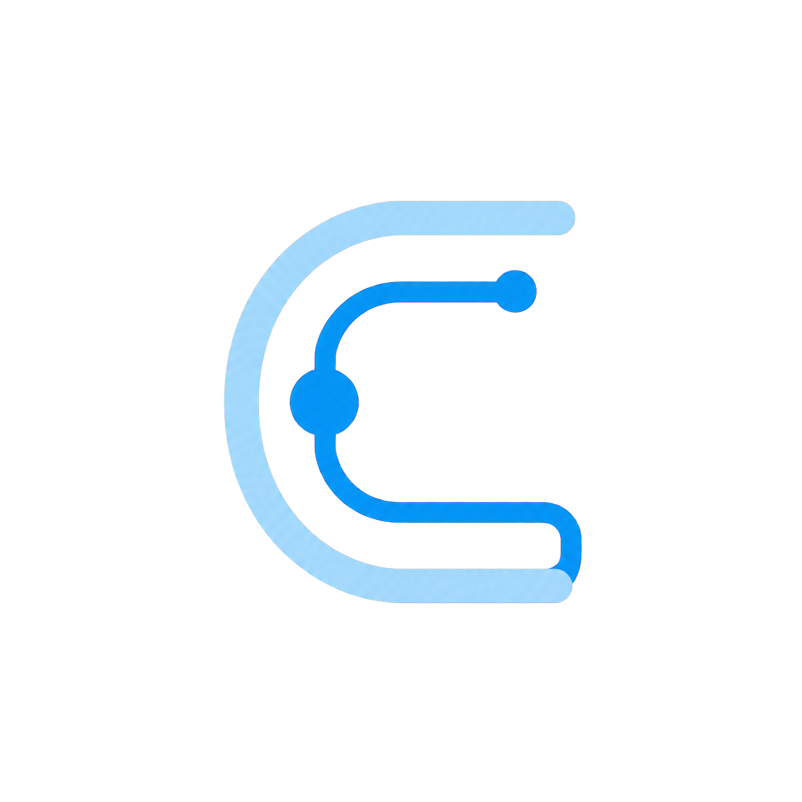

CODEX NETWORK GUARD
连接守护
本机守护
正在检查
正在检测连接…
正在连接本地守护进程
连接概览
当前保护路径
更多工具远程、诊断与保护控制
手动设置本地代理自动检测不到 VPN 时使用
只填写 VPN 软件在本机暴露的 HTTP 或 SOCKS5 地址，不填写机场订阅链接。
安全与隐私边界本机代理，不读取内容
- 仅监听本机 127.0.0.1:17890，不启用 TUN 或系统全局代理。
- 不解密 HTTPS，不读取 Codex 对话、代码、账号令牌或 VPN 配置。
- VPN 不可用时默认阻止直连，避免断线时静默绕过代理。
- 导出诊断只包含状态、域名、错误类别和延迟；代理凭据会脱敏。